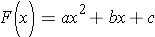
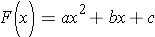

- Next
- Page 1 of 5
A quadratic equation is a second-order polynomial equation in a single variable “x” with a not equal to 0, because it is a second order polynomial, the fundamental theorem of algebra guarantees that is has two solutions. The solutions may be both real, or both complex. In case you have forgotten I have placed the Fundamental Theorem of Algebra below
is a second-order polynomial equation in a single variable “x” with a not equal to 0, because it is a second order polynomial, the fundamental theorem of algebra guarantees that is has two solutions. The solutions may be both real, or both complex. In case you have forgotten I have placed the Fundamental Theorem of Algebra below
Before we start dealing with the parts of the quadratic it will become necessary for us to get the given equation in the standard quadratic form.
 

or sometimes written

The solutions can be found by completing the square, which is known as the quadratic formula.
When we deal with the quadratic form there are several key parts to look at. These parts can be used to determine the shape of a graph, the number of times the graph crosses the x axis…which in turn can tell us the number of solutions to the equation. The parts can also tell us the maximum and minimum values of the quadratic function. This lesson will deal with some of the parts of the quadratic.

Content ©2012. Some Rights Reserved.
Date last modified: January 20, 2012.